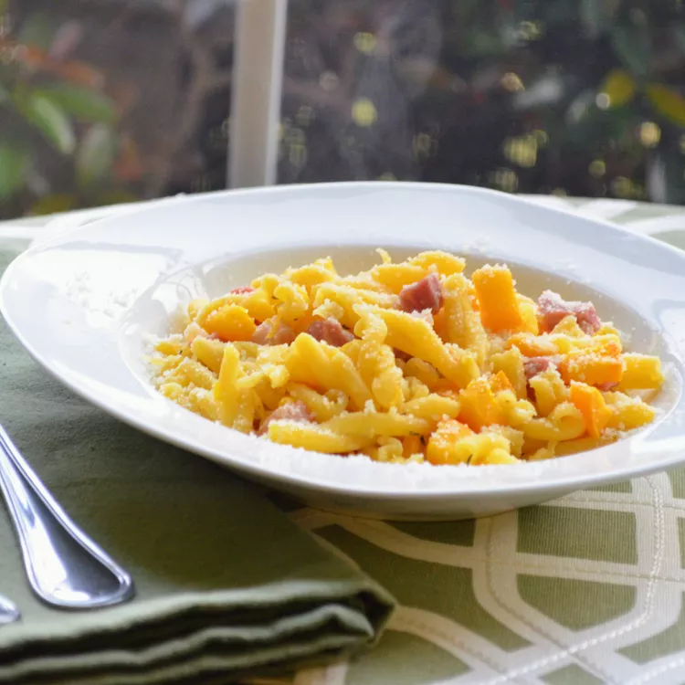

Gemelli Pasta with Roasted Pumpkin and Pancetta

Description
Roasting the pumpkin brings out the sweetness, which pairs well with the salty pancetta. This "primo piatto," or first course, is simple and delicious!
Ingredients
- 2 cups peeled, cubed pumpkin
- 2 tablespoons extra-virgin olive oil, divided
- 1 teaspoon fresh thyme
- ¼ teaspoon salt
- ⅛ teaspoon ground black pepper
- ½ (16 ounce) package gemelli pasta
- 1 (4 ounce) package diced pancetta
- 1 cup chicken broth
- ¼ cup grated Parmigiano-Reggiano cheese
Steps
- Preheat the oven to 400 degrees F (200 degrees C). Line a baking sheet with parchment paper.
- Pile diced pumpkin on the baking sheet. Drizzle with 1 tablespoon olive oil and toss lightly to coat. Spread pumpkin out and sprinkle with thyme, salt, and pepper.
- Bake in the preheated oven for 20 minutes. Remove and set aside.
- Bring a large pot of unsalted water to a boil. Add gemelli pasta and boil until just nearly tender, about 9 minutes.
- Heat remaining olive oil in a large pan over medium heat. Add pancetta and cook until starting to brown, 4 to 5 minutes. Add the roasted pumpkin and cook, stirring frequently, 2 to 3 minutes more. Pour in chicken broth and bring to a boil.
- Drain pasta and add to the pan with the pumpkin mixture. Continue cooking until pasta is tender yet firm to the bite, 1 to 2 minutes more. Serve immediately, topped with Parmigiano-Reggiano cheese.